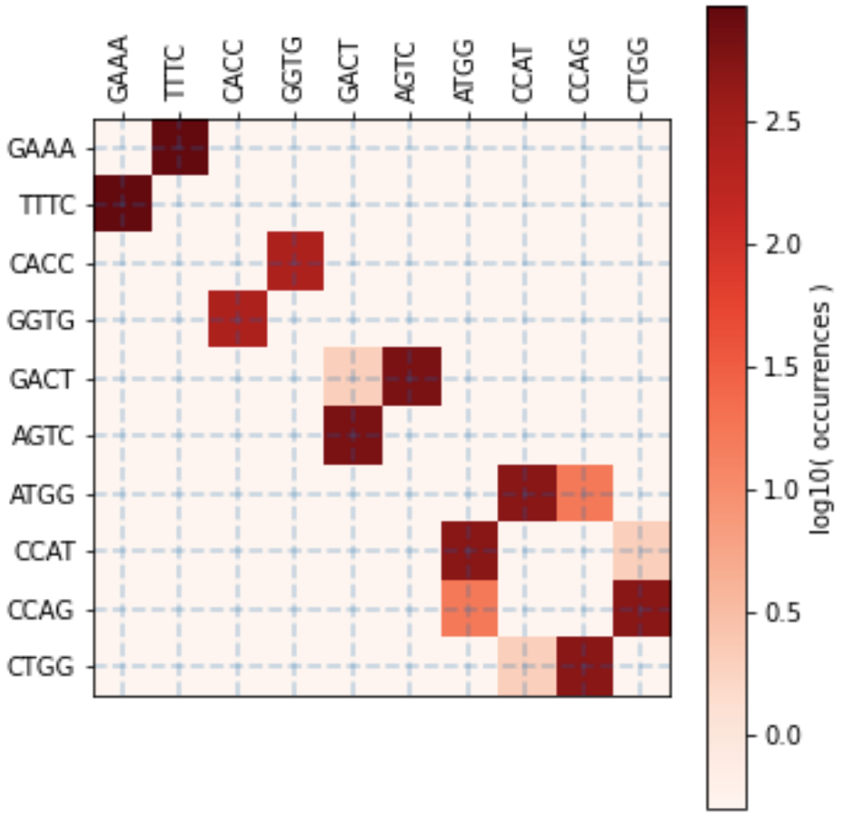
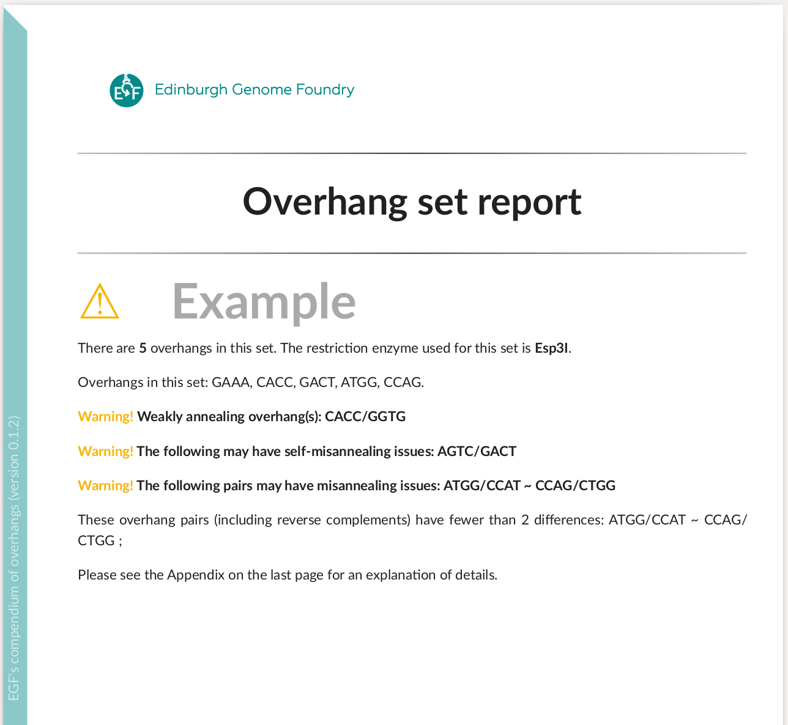
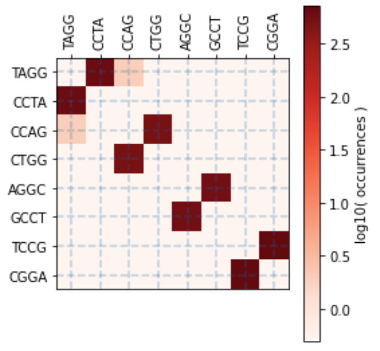

EGF's Compendium of overhangs

This Python package generates a description of an input set of DNA overhangs and outputs a PDF file. Additionally, it evaluates suitability of an input set of overhangs for Golden Gate DNA assembly.
Install
# pip install overhang
pip install --upgrade git+https://github.com/Edinburgh-Genome-Foundry/overhang.git@main
Usage
import overhang as oh
overhang = oh.Overhang("TCAT")
dir(overhang)
overhang_classes = oh.generate_all_overhangs()
oh.write_pdf_report(target="examples/compendium.pdf", overhangs=overhang_classes)
See compendium.pdf.
Inspect a set of overhangs for assembly:
overhangset = oh.OverhangSet(
overhangs=["ATGG", "GAAA", "CACC", "GACT", "ATGG", "CCAG",], name="Example",
)
oh.write_overhangset_report("examples/set_report_Example.pdf", overhangset)
# Esp3I Tatapov plot (37 Celsius, 1 hour):

The first page of the report:

Improve an overhang set by removing the bad interactions:
overhangs = ['TAGG', 'ATGG', 'GACT', 'GGAC', 'TCCG', 'CCAG', 'CAGC', 'AGGC']
overhangset = oh.OverhangSet(overhangs=overhangs, name="Example 2")
overhangset.find_perfect_subset()
# Overhangs in subset: ['TAGG', 'CCAG', 'AGGC', 'TCCG']
# Number of overhangs in subset: 4
# Esp3I Tatapov plot (37 Celsius, 1 hour):

Another approach is to iteratively remove the worst weakly annealing, self-misannealing, and misannealing overhang interactions until the desired number of overhangs is reached.
Versioning
Overhang uses the semantic versioning scheme.
Copyright
Copyright 2021 Edinburgh Genome Foundry
Overhang was written at the Edinburgh Genome Foundry by Peter Vegh.